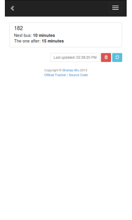
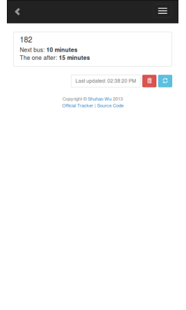

- Aerospace Engineering student at Carleton University
- Yay rockets!
- Software Developer
- Most recently interned at Mozilla as a web developer
- Worked on an offline version of support.mozilla.org
- Worked with web based technologies in my spare time for the last 4 years
- Many projects: http://shuhaowu.com
 
